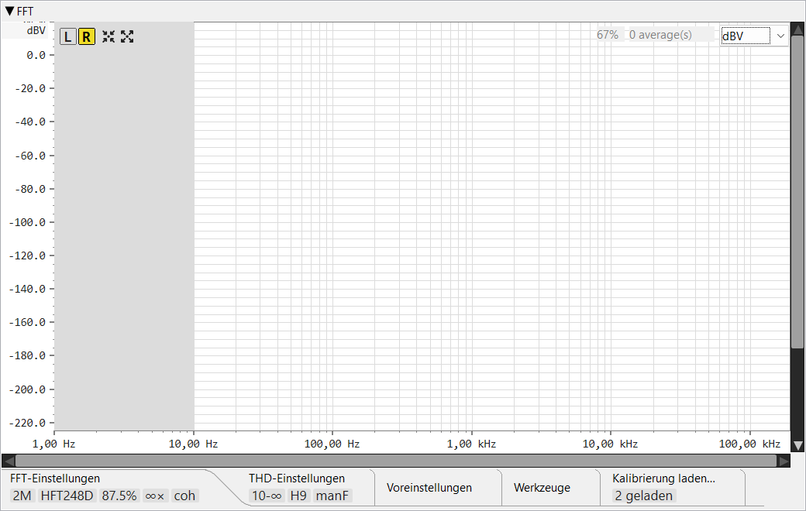

Diese Seite beschreibt die Bedienelemente des FFT-Analysers. Informationen zur Funktionsweise — kohärente Mittelung weit unterhalb des Grundrauschens, Sub-Bin-Frequenzausrichtung, THD / SNR / ENOB — finden sich unter Funktionsprinzip ▸ FFT-Analyser.
Echtzeit-Spektrum mit Harmonischen-Verzerrung / Grundrauschen-Messungen. Der Analyser liest Samples aus demselben gemeinsamen Capture-Puffer, den auch das Oszilloskop verwendet; das Drücken der roten Aufnahmetaste des FFT ändert den Aufnahmezustand des Oszilloskops nicht. Der Analysetakt skaliert mit der Überlappung — bei 87,5 % Überlappung wird das Spektrum ~8× pro FFT- Fensterfunktion aktualisiert.

L / R, Auto-Setup,
Maximieren, die
Verzerrungstabellen-Umschaltung,
Mittelung zurücksetzen und die
Externes-Fenster-Umschaltung.», wenn mehr
vorhanden sind, als hineinpassen). Zum Zeitpunkt der Erstellung:
FFT-Einstellungen,
THD-Einstellungen,
Voreinstellungen,
Dienstprogramme,
Kalibrierung laden…,
Speichern unter… und
Laden aus…. Wichtige Werte werden als
Kacheln angezeigt, wenn ein Tab-Inhalt
eingeklappt ist; Doppelklick auf die Leiste klappt sie aus oder ein.Reihe quadratischer Schaltflächen oben links auf der Spektrumsfläche.
Umschalttasten zur Auswahl des Kanals, der den Analyser speist. Die Schaltfläche des ausgewählten Kanals erhält einen farbigen Hintergrund. Ein Kanalwechsel setzt den Mittelungspuffer zurück (siehe Zurücksetzen), damit das Spektrum des neuen Kanals sauber beginnt.
Rahmt das Spektrum um den erkannten Grundton: Frequenzbereich ±1 Dekade, Amplitude oben = Grundton + 10 dB, unten = Grundrauschen − 20 dB. Erfordert mindestens eine veröffentlichte Analyse.
Das Gegenteil von Auto-Setup: setzt die weitestmögliche Ansicht — Frequenz 0 .. Nyquist. Der Amplitudenbereich ist nur dann signalunabhängig, wenn noch keine aktuelle Analyse vorliegt (oben +20 dB, fester Standard unten). Sobald ein Spektrum gemessen wurde, folgt der Bereich dem Signal: oben = Grundton + 20 dB (mindestens +20 dB) und unten = Grundrauschen − 30 dB.
Blendet die THD-Infotabelle oben links auf der Zeichenfläche ein / aus. Die Schaltfläche erscheint erst nach der ersten veröffentlichten Analyse — vorher gibt es nichts anzuzeigen. Wenn die Tabelle ins externe Fenster ausgelagert ist (siehe unten), steuert diese Umschaltung weiterhin, ob die Tabelle überhaupt sichtbar ist.
Rote Gegenuhrzeigersinn-Pfeil-Schaltfläche (ein „Zurück zum Anfang"-Reset). Löscht den Mittelungspuffer + das gespeicherte Spektrum und setzt den Zähler zurück. Die nächste Analyse beginnt bei null — und klemmt ausschließlich auf neue Samples, damit altes Audio vor dem Reset nicht in den neuen Mittelwert einfließt.
Öffnet die THD-Infotabelle in einem separaten Werkzeugfenster, damit sie neben dem Spektrum platziert werden kann, ohne Zeichenfläche zu belegen. Schließen des Werkzeugfensters bringt die Tabelle in die Hauptansicht zurück.
Polylinie der FFT-Amplitude über den sichtbaren Frequenzbereich. Kurvenfarbe, Linienbreite und Diagrammhintergrund sind in den Einstellungen → FFT konfigurierbar. Bei starker Vergrößerung bleibt die Kurve zusammenhängend: Hüllkurven pro Pixel fassen mehrere Bins in eine vertikale Linie zusammen, wobei benachbarte bekannte Spalten durch ein Polyliniensegment verbunden werden.
Rote Punkte an den erkannten Grundton- und Harmonischen-Frequenzen. Ihr Durchmesser ist konfigurierbar. Wenn die manuelle Grundton-Überschreibung aktiviert ist, wird nur der Grundton-Punkt auf den Überschreibungswert angehoben; die übrigen verbleiben auf dem de-eingebetteten / kalibrierten dBV-Maßstab.
Hellgrauer Overlay, der Frequenzen außerhalb des aktiven Verzerrung-HP- / Verzerrung-LP-Fensters abdeckt. Zeigt auf einen Blick, welche Bänder von der SNR- / THD+N-Integration ausgeschlossen sind.
Beim Überfahren mit der Maus erscheint ein gestricheltes graues Kreuz
am Zeiger. Die schwebende Anzeige neben dem Cursor listet die Frequenz
(f = …), die Amplitude auf der Höhe des Cursors auf der
vertikalen Achse (y = …) und die Amplitude des nächstgelegenen
Spektrum-Bins in der aktiven Einheit (|m| = …) auf.
Die Anzeige wird ausgeblendet, wenn sich der Zeiger über einer
Kopfzeilen-Schaltfläche oder über den Feldern für Füllprozentsatz /
Mittelungen / Amplitudeneinheit befindet.
Verschiebt den sichtbaren Frequenzbereich — nur links / rechts. Eine Bildlaufleiste zoomt nie; der Schieberegler wird durch die Ansicht skaliert (seine Breite spiegelt den sichtbaren Anteil des Gesamtbereichs wider) und verfolgt den Zoom automatisch, aber das Ziehen des Schiebereglers verschiebt nur. Klick auf die leere Leiste springt seitenweise zum Zeiger; Schaltfläche gedrückt halten wiederholt die Seitensprünge, bis der Schieberegler den Cursor erreicht. Zum Zoomen das Mausrad über der Zeichenfläche verwenden (Rad / Shift+Rad zum Verschieben, Strg+Rad / Strg+Shift+Rad zum Zoomen).
Entsprechend für die Amplitudenachse: verschiebt nur auf / ab, und der Schieberegler verfolgt den Amplitudenzoom. Strg+Rad in der Zeichenfläche zoomt die Amplitudenachse um den Cursor, und der Schieberegler wird entsprechend aktualisiert.
Kompakter Overlay oben links auf der Zeichenfläche (oder im externen Werkzeugfenster bei Auslagerung). Alle Werte verwenden die aktuelle Amplitudeneinheit. Ausgeblendet durch die Verzerrungstabellen-Umschaltung.
Fette erste Zeile: Grundtonfrequenz (4 Dezimalstellen Hz), dBFS, dBV.
Die dBV-Spalte zeigt in Rangfolge: die
manuelle Überschreibung, falls gesetzt;
andernfalls den de-eingebetteten (kalibrierungskorrigierten) Wert, wenn
eine Kalibrierung geladen ist;
andernfalls den einfachen ADC-kalibrierten Wert. Im Zweiston-Modus
besteht die Kopfzeile aus zwei Zeilen — F1: und
F2: — eine je Ton.
Span: 900 .. 9500 Hz — das Band, über das SNR /
THD+N integrieren. Span: full wenn beide
Verzerrungsgrenzen deaktiviert sind.
ΔF: +0.001 Hz (+0.97 ppm) Δosc: +23.79 Hz @ 24.576 MHz.
Zeigt die Abweichung des gemessenen Grundtons vom Sollwert des Generators —
sowohl in absolutem Hz als auch in ppm, und zurückgerechnet auf den
Master-Oszillator, wenn die Abtastrate einer bekannten 44,1- / 48-kHz-Familie
angehört. Nur der Grundton trägt einen ppm-Wert (Harmonische nie); im
Zweiston-Modus gibt es zwei Zeilen, Δf1 und Δf2,
eine je Ton. Nur sichtbar, wenn
„Grundton vom Generator beziehen"
eingeschaltet ist UND der Generator tatsächlich läuft.
Gesamte Nicht-Grundton-Leistung, A-bewertet. Das Suffix „A" kennzeichnet die A-Bewertung.
Rauschleistung mit den erkannten Harmonischen aus dem Band entfernt.
Signal-Rausch-Verhältnis in dB. Definiert gegenüber dem reinen Rauschband (oben).
Gesamtoberwellenverzerrung als Prozentsatz des Grundtons, summiert über Harmonische 2 bis N (wobei N = Maximale Harmonische für THD).
Gesamtoberwellenverzerrung + Rauschen. Gleicher Zähler wie N+D, normiert auf den Grundton.
Effektive Bit-Anzahl = (SINAD − 1,76) / 6,02. Spiegelt den kombinierten Dynamikbereich von ADC + Messkette wider.
Zwei Harmonische pro Zeile. Jeder Eintrag zeigt den dBV-Pegel der Harmonischen und ihren Prozentsatz des Grundtons. Die Anzahl der Zeilen wird durch Maximale Harmonische berechnen bestimmt.
Kleines Prozentlabel (z. B. 100%), das anzeigt, wie viel
des nächsten FFT-Fensters seit der vorherigen Analyse angesammelt wurde.
Erreicht 100 % in dem Moment, in dem der Analyser auslöst.
z. B. 32 average(s). Anzahl der Frames, die derzeit zum
angezeigten Mittelwert beitragen. Begrenzt auf die konfigurierte
Anzahl der Mittelungen im Festfenstermodus;
steigt im „Dauermodus" unbegrenzt.
Auswahlfeld oben rechts mit vier Optionen:
V, V/√Hz, dBV, dBFS.
Ein Einheitenwechsel konvertiert die Achsenbeschriftungen und
Bildlaufleistengrenzen direkt — das sichtbare Signal bleibt auf derselben
Bildschirm-Y-Position.
Runder roter Umschalter, rechts an der Werkzeugleiste verankert. Beim Drücken wird eine Referenz auf das gemeinsame Aufnahmegerät erworben und der FFT-Worker gestartet. Der Aufnahmezustand des Oszilloskops ist unabhängig — beide Bereiche können gleichzeitig aufnehmen. Die Schaltfläche bleibt auch bei eingeklappten Werkzeugleisten-Tabs sichtbar.
Zweierpotenz-Auswahlfeld von 8 k bis 4 M. Größere Fenster liefern feinere Bin-Auflösung, aber langsamere Aktualisierungsrate und mehr Speicherbedarf. 1 M bei 384 kHz ergibt ~0,37 Hz/Bin.
Auswahlfeld der Analysefensterfunktionen, bei denen Hauptkeulenbreite gegen Nebenkeulenpegel abgewogen wird: Rechteck, Hann, Blackman-Harris 4-Term und 7-Term, Flat-top, die Heinzel-Flat-top-Familie HFT144D / HFT248D, die Kaiser-Bessel KB24 / KB38 und das Dolph-Chebyshev DC150 / DC200 / DC250 / DC300 (die Zahl ist die Nebenkeulendämpfung in dB). Hann oder Blackman-Harris für allgemeine Messungen verwenden; Flat-top / HFT für genaue Amplitudenmessung eines isolierten Tons; hohes Dolph-Chebyshev (DC250 / DC300) für sehr tiefe Nebenkeulensuppression.
0 %, 50 %, 75 %, 87,5 %, 93,75 %. Aufeinanderfolgende Analysefenster teilen diesen Bruchteil ihrer Samples. Überlappung bewirkt zweierlei: Sie erhöht die Aktualisierungsrate (mehr Spektren pro Sekunde) und — mit einer abklingenden Fensterfunktion — nutzt alle erfasste Eingangsleistung effektiv, da die Samples, die eine Fensterfunktion an ihren Rändern dämpft, vom nächsten, überlappenden Fenster voll gewichtet werden. Höhere Überlappung kostet mehr CPU; 87,5 % ist ein üblicher guter Kompromiss. Siehe Funktionsprinzip ▸ FFT-Analyser.
Schritt-Wahlschalter — 2, 4, 8, 16, 32, 64, 128, ∞ (dauerhaft). Anzahl der überlappten Frames, die pro veröffentlichtem Spektrum gemittelt werden. Höhere Werte reduzieren die Rauschvarianz, verlangsamen aber die Reaktion. „Dauerhaft" akkumuliert unbegrenzt — mit Stopp nach kombinieren, um zu begrenzen.
Kontrollkästchen + numerisches Feld. Wenn das Kontrollkästchen aktiviert ist, pausiert der Analyser nach N Analysen (nur im Dauermittelungsmodus). Zurücksetzen aktiviert ihn erneut.
Wenn aktiviert, rastet der Analyser auf die aktuelle Frequenz des Generators ein, anstatt den lautesten Peak automatisch zu erkennen. Ermöglicht die Messung tief gekerbter Grundtöne, wo sonst ein lauterer Netzstör-Spur die Erkennung gewinnen würde, und ist Voraussetzung für die Taktdifferenz-Zeile (ppm). Wird automatisch ignoriert, wenn der Generator nicht läuft. Siehe Funktionsprinzip ▸ FFT-Analyser.
Auswahlfeld — Keine oder IIR-Kammfilter. Der Kammfilter filtert das erfasste Signal vor der Mittelung mit einem frequenzgeregelten IIR-Kammfilter, der auf die aktuelle Netzfrequenz eingerastet ist, und dämpft die Netzleitung sowie alle ihre Harmonischen (50 / 100 / 150 … Hz oder 60 / 120 / 180 … Hz).
Mit Vorsicht verwenden. Da der Kammfilter jede Netzharmonische kerbt, wird ein Messtons, der auf eine davon trifft — ein rundes 1000 Hz ist die 20. Harmonische von 50 Hz — zusammen mit dem Brummen gedämpft. Wenn ein Ton eingespeist wird, diesen von der Rasterung wegbewegen (z. B. 1005 Hz statt 1000 Hz), damit der Kammfilter das Netz bereinigen kann, ohne das Signal oder seine Harmonischen zu beeinflussen.
Schaltet die Frequenzachse zwischen logarithmisch und linear. Logarithmisch ist für Audio üblich (konstante Pixel pro Oktave); linear ist nützlich, um gleichmäßig beabstandete Störsignale zu erkennen.

Legt die untere Grenze des Bands für die SNR- / N+D-Integration fest. Unterhalb dieser Frequenz werden Rauschen und Störsignale ausgeschlossen — nützlich, um Netzbrummen und DC-nahe Artefakte zu ignorieren.
Entsprechend für die obere Grenze. Schließt Hochfrequenzrauschen oberhalb des Interessen-Bands aus (z. B. oberhalb 20 kHz für Audio).
Wenn aktiviert, behandelt der Analyser diesen Wert als dBV des Grundtons, anstatt den de-eingebetteten Wert oder den des kalibrierten ADC zu verwenden. Der Grundton-Punkt des Diagramms und die dBV-Spalte der THD-Tabellen-Kopfzeile wechseln auf diesen Wert; andere Bins und die dBV-Werte der Harmonischen-Zeilen verbleiben auf dem de-eingebetteten Wert oder dem kalibrierten Maßstab. Nützlich, wenn eine externe Twin-T-Kerbfilter den Grundton dämpft, man seinen wahren Pegel aber kennt — warum dies THD bei einem driftenden Kerbfilter stabilisiert, ist unter Funktionsprinzip ▸ Grundton manuell fixieren beschrieben.
Numerisch (2 .. 9). Obere Grenze der in das THD-Verhältnis summierten Harmonischen. THD H2..N verwendet Harmonische 2 bis zu dieser Zahl.
Numerisch (≥ Maximale Harmonische für THD). Wie viele Harmonische erkannt und in den Harmonischen-Zeilen aufgelistet werden — unabhängig davon, wie viele in das THD-Verhältnis eingehen.
Kontrollkästchen. Wenn aktiviert, werden komplexe Spektren gemittelt (so heben sich zufälligphasiges Rauschen über Frames auf, was das Grundrauschen um ~3 dB pro Verdopplung der Frame-Anzahl senkt). Wenn deaktiviert, werden Leistungsspektren gemittelt (Rauschvarianz reduziert sich, aber der Pegel sinkt nicht). Kohärente Mittelung erfordert phasenstabile Signale — Sweeps und Impulsantworten werden besser mit Leistungsmittelung gemessen.

Benannte Schnappschüsse der Analyser-Konfiguration. Einen Namen im Auswahlfeld eingeben und Speichern drücken, um die aktuellen FFT- und THD-Einstellungen zusammen mit Kanal, Amplitudeneinheit, den Frequenz- / Amplitudenachsenbereichen und dem Log/Linear-Flag zu speichern; einen gespeicherten Namen auswählen und Laden drücken, um sie wiederherzustellen, oder Löschen, um sie zu entfernen (mit Bestätigung).

Rendert den FFT-Bereich als PNG in einer wählbaren Auflösung. Der Bereich wird außerhalb des Bildschirms in Zielgröße angeordnet, sodass das Bild ein echtes Layout ist und kein hochskaliertes Bitmap.
Öffnet den ADC-Kalibrierungsdialog (derselbe, der auch vom Oszilloskop aus erreichbar ist), um die dBV- / V-Skala gegen einen bekannten Eingangspegel zu verankern.

Lädt eine oder mehrere Frequenzgang-Kalibrierungsdateien
(.frc, erzeugt vom Frequenzgang-Modul —
siehe Funktionsprinzip ▸ Frequenzgang)
und de-embettet sie zur Anzeigezeit aus dem Spektrum — so spiegelt die
Anzeige das Gerät unter Test wider, nicht die Messkette (ein 1 kHz
Twin-T-Kerbfilter, ein Abschwächer, der eigene Rollabfall der Soundkarte).
Jede Kalibrierung ist eine Zeile; die Schaltfläche + fügt eine weitere Zeile hinzu, und sie werden der Reihe nach kombiniert. Ab der zweiten Zeile enthält jede Zeile auch eine Zeile-löschen-Schaltfläche, um nur diese Zeile zu entfernen.
.frc-Datei dieser Zeile auszuwählen. Die Löschen-
(×)-Schaltfläche entlädt die Datei der Zeile, ohne die Zeile zu entfernen.Die Korrektur wird nur auf die angezeigte Kurve angewendet; der Mittelungs-Akkumulator bleibt roh. Jeder Peak wird doppelt gezeichnet — ein roter Punkt auf dem korrigierten Pegel und ein blauer Punkt, wo der ADC ihn vor der Korrektur sah — und die THD-Tabelle folgt den korrigierten (roten) Werten.

Schreibt das aktuelle Spektrum in eine .fft-Datei. Das Pfadfeld
ist schreibgeschützt; eine einzelne Speichern-Schaltfläche öffnet den
Dateidialog (es gibt keine separate Durchsuchen-Funktion). Das Spektrum wird
mit seinen de-eingebetteten Harmonischen gespeichert, und der
Datei-Header enthält die vollständige Konfiguration, mit der die Analyse
durchgeführt wurde — FFT-Länge, Abtastrate, Fensterfunktion, Mittelungsmodus
und -anzahl, Kanal, das Verzerrungsband, manueller Grundton, Kalibrierung
und (im Zweiston-Modus) die zwei Tonfrequenzen — sodass eine gespeicherte
Messung selbstbeschreibend ist.

Liest eine zuvor gespeicherte .fft-Datei und rendert sie als
statischen Spektrum-Overlay — nützlich zum Vergleich von Messungen, die zu
verschiedenen Zeiten oder unter verschiedenen Bedingungen aufgenommen wurden.
Ein geladenes Spektrum wird genau so angezeigt, wie es gespeichert wurde:
die aktuellen De-Embedding- und Manueller-Grundton-Einstellungen werden
nicht erneut darauf angewendet (die gespeicherte Kurve enthält
bereits die eigenen).
Nur drei Tabs tragen Kacheln — FFT-Einstellungen, THD-Einstellungen und Kalibrierung laden; sie zeigen die kleinen pillenförmigen Abzeichen unter dem Tab-Label, die die Hauptbedienelemente des Tabs zusammenfassen. Voreinstellungen, Dienstprogramme, Speichern und Laden haben keine. Kacheln sind passiv; mit der Maus über eine fahren, um einen Tooltip mit Beschreibung des Werts zu erhalten.
Kurzform auf dem Tab FFT-Einstellungen — z. B. 1M,
64k.
Kurzcode der Fensterfunktion — keine feste Länge. Eines von
RECT, HANN, BH4, BH7,
FT, HFT144D, HFT248D,
KB24, KB38, DC150,
DC200, DC250, DC300.
Prozentsatz (87.5%).
Zahl mit ×-Suffix (32×) oder ∞ im
Dauermodus.
coh wenn kohärente Mittelung aktiv ist,
inc wenn inkohärent.
Auf dem Tab THD-Einstellungen. Zeigt das SNR- / N+D-Integrationsband:
beide Grenzen aktiv → 50-20k; nur HP (kein LP) →
50-∞; nur LP (kein HP) → 0-20k; keine gesetzt →
all.
H9 — die maximale Harmonische für das THD-Verhältnis.
manF. Nur sichtbar, wenn die manuelle Grundton-Überschreibung
aktiviert ist.